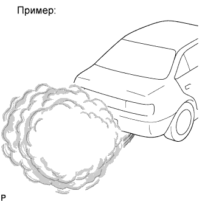

СИСТЕМА ECD (для моделей без DPF) > Утечка масла турбонагнетателя и белый дым |
| Тип утечки масла | Описание | Основной участок неисправности |
| Внутренняя утечка масла (белый дым) | Утечка масла из корпуса подшипника в кожух компрессора (на впуске) или корпус турбины (на выпуске) через уплотнительные кольца. Внутренняя утечка масла не заметна снаружи турбонагнетателя. Если утечка масла происходит через уплотнение со стороны турбины, из выпускной трубы будет выходить большое количество белого дыма. |
|
| Наружная утечка масла | Утечка изнутри турбонагнетателя наружу турбонагнетателя (напр., через уплотнение FIPG, фланец маслопровода или штуцер маслопровода). Сюда относятся все утечки масла, заметные снаружи турбонагнетателя. |
|
| *1 | Кожух компрессора | *2 | Кольцевое уплотнение |
| *3 | Вход компрессора | *4 | Крыльчатка компрессора |
| *5 | Корпус подшипника | *6 | Вал |
| *7 | Слив масла (выход) | *8 | Уплотнение FIPG |
| *9 | Корпус турбины | *10 | Колесо турбины |
| *a | Внутренняя утечка масла в кожух компрессора | *b | Внутренняя утечка масла в корпус турбины |
| *A | Рис. 1 | - | - |
| *A | Рис. 2 | *B | Рис. 3 |
| *a | Наличие масла на входе компрессора (макс. 5 см3) | *b | Наличие масла на выходе компрессора |
| *A | Рис. 4 | - | - |
| *a | При наличии реальной утечки масла масло вытекает через уплотнение | *b | Контрольная зона для выявления утечки масла (уплотнение FIPG) |
| Неисправности деталей турбонагнетателя и их признаки |
| Основная неисправность | Повреждение уплотнительного кольца | |
| Признаки |
| |
| Примечание |
| |
| Основная неисправность | Повреждение уплотнительного кольца | |
| Признаки |
| |
| Примечание |
| |
| Основная неисправность | Засорение закоксованным маслом на сливе масла | |
| Признаки | Выход большого количества белого дыма из выпускной трубы | |
| *1 | Слив масла | - | - |
| *a | Закоксованное масло | *b | Засорение закоксованным маслом на сливе масла |
| Основная неисправность |
| |
| Признаки |
| |
| Примечание |
| |
| Основная неисправность | Повреждение | |
| Признаки |
| |
| Примечание |
| |
| Признаки | Утечка масла через уплотнение FIPG | |
| Примечание |
| |
| *1 | Торцевая крышка компрессора | *2 | Уплотнение FIPG |
| *3 | Кожух компрессора | - | - |
| *a | Утечка масла | *b | Утечка масла через уплотнение FIPG |
| Признаки | Утечка масла через шланговое соединение между шлангом и кожухом компрессора | |
| Примечание | Если масляное пятно доходит до места подсоединения шланга, можно заключить, что его появление вызвано повреждением шлангового соединения. | |
| *A | Рис. 5 | - | - |
| *1 | Выход компрессора | *2 | Кожух компрессора |
| *a | След от утечки масла из места подсоединения шланга | *b | Утечка масла из места подсоединения шланга |
| 1.ОПРЕДЕЛИТЕ ТИП УТЕЧКИ МАСЛА |
Определите, какой является утечка масла – внутренней или наружной.
| Тип утечки масла | Описание |
| Внутренняя утечка масла (белый дым) | Утечка масла из корпуса подшипника в кожух компрессора (на впуске) или корпус турбины (на выпуске) через уплотнительные кольца. Внутренняя утечка масла не заметна снаружи турбонагнетателя. Если утечка масла происходит через уплотнение со стороны турбины, из выпускной трубы будет выходить большое количество белого дыма. |
| Наружная утечка масла | Утечка изнутри турбонагнетателя наружу турбонагнетателя (напр., через уплотнение FIPG, фланец маслопровода или штуцер маслопровода). Сюда относятся все утечки масла, заметные снаружи турбонагнетателя. |
| Результат | Следующий шаг |
| Наружная утечка масла | А |
| Внутренняя утечка масла | B |
|
| ||||
| А | |
| 2.ЗАМЕНИТЕ ДЕТАЛЬ, ЧЕРЕЗ КОТОРУЮ ВЫТЕКАЕТ МАСЛО |
Замените деталь, через которую вытекает масло.
| ДАЛЕЕ | ||
| ||
| 3.ПРОВЕРЬТЕ, НЕТ ЛИ БЕЛОГО ДЫМА |
До упора нажмите педаль акселератора, а затем отпустите ее.
|  |
Проверьте, появляется ли белый дым при разгоне двигателя.
| Результат | Следующий шаг |
| Белый дым выпускается | А |
| Белый дым не выпускается | B |
|
| ||||
|
| ||||
| 4.ПРОВЕРЬТЕ ВХОД КОМПРЕССОРА |
Снимите шланг воздушного фильтра со входа компрессора.
Проверьте, имеется ли чрезмерное количество масла на входе компрессора, и есть ли чрезмерный масляный нагар на крыльчатке компрессора.
Установите на место шланг воздушного фильтра.
| ДАЛЕЕ | |
| 5.ПРОВЕРЬТЕ ВЫХОД КОМПРЕССОРА |
Снимите шланг фильтра с выхода компрессора.
Проверьте, имеется ли чрезмерное количество масла или чрезмерный масляный нагар на выходе компрессора.
| Результат | Следующий шаг |
| Чрезмерное количество масла присутствует как на входе, так и на выходе компрессора | А |
| Чрезмерное количество масла присутствует только на выходе компрессора | B |
| На входе или выходе компрессора нет чрезмерного количества масла | C |
Установите на место воздушный шланг.
|
| ||||
|
| ||||
| C | |
| 6.ПРОВЕРЬТЕ ВХОД ТУРБИНЫ |
Снимите турбонагнетатель с двигателя.
Проверьте, имеется ли чрезмерное количество содержащего воду масла или чрезмерный масляный нагар на входе турбины.
| ДАЛЕЕ | |
| 7.ПРОВЕРЬТЕ ВЫХОД ТУРБИНЫ |
Проверьте, имеется ли чрезмерное количество содержащего воду масла или чрезмерный масляный нагар на выходе турбины.
| Результат | Следующий шаг |
| Чрезмерное количество масла присутствует как на входе, так и на выходе турбины | А |
| Чрезмерное количество масла присутствует только на выходе турбины | B |
|
| ||||
| B | |
| 8.ЗАМЕНИТЕ ТУРБОНАГНЕТАТЕЛЬ |
Замените турбонагнетатель в сборе (Нажмите здесь).
| ДАЛЕЕ | |
| 9.ПРОВЕРЬТЕ, УСТРАНЕНА ЛИ ДОЛЖНЫМ ОБРАЗОМ НЕИСПРАВНОСТЬ |
| ДАЛЕЕ | ||
| ||